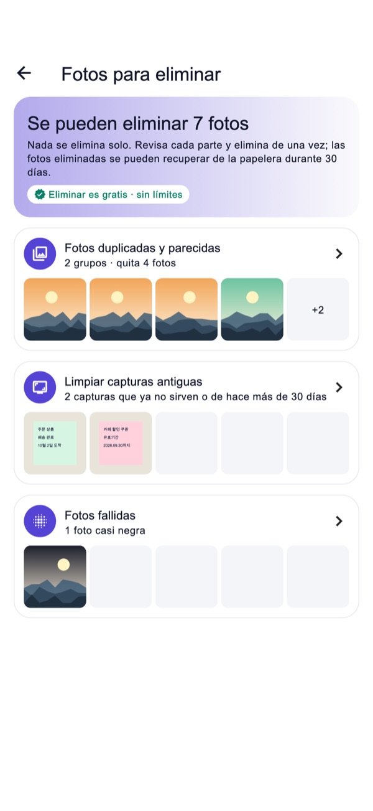

Eliminar fotos duplicadas
1. Qué se reúne
«Fotos para eliminar», en la pestaña Fotos, reúne tres tipos de fotos.
• Fotos duplicadas y parecidas: la misma foto dos veces o ráfagas
• Capturas antiguas: de más de 30 días. Las que muestran recibos, cuentas o contraseñas no se preseleccionan.
• Fotos fallidas: fotos casi negras tomadas por error

2. Cómo eliminarlas
1. En cada grupo se conserva la mejor foto y el resto queda preseleccionado.
2. Toca una foto para verla grande y cambiar la que se conserva.
3. Cuando esté bien, toca «Eliminar … fotos».
3. ¿Borrada por error?
Las fotos eliminadas se pueden recuperar durante 30 días en «Eliminado recientemente» de tu teléfono. Donde no se puede, la app te avisa antes de eliminar.